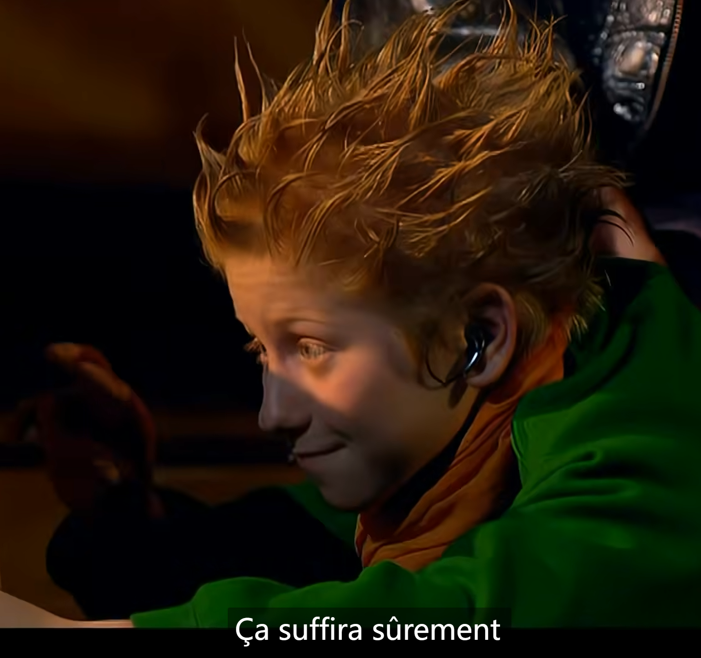

路径
目录文件夹和根目录
将文件夹拖到vs code中可以直接打开
相对路径
以引用文件所在位置为参考基础，而建立出来的目录路径
同一级路径
下一级路径 图像文件位于html文件下一级 src="images/baidu.gif"
上一级路径 图像文件位于html文件上一级 src="../baidu.gif"

绝对路径
懒得打了反正就是路径全写上，不适用，\
网络上的绝对路径（一个链接）
超链接标签
文本或图像
herf 用于指定链接目标的url地址（必须属性），当为标签应用href属性时，它就具有了超链接的功能
target 用于指定链接页面的打开方式，其中_self为默认值，_blank为在新窗口中打开方式
1.内部链接
昨天的笔记
1.外部链接
腾讯
3.空链接
没做好的网页
4.下载链接：地址链接的是 文件 .exe 或者 .zip等压缩包形式
下载文件
5.网页元素的链接

6.锚点链接：快速定位到页面中某个位置
在链接文本的href属性中，设置属性值为 #名字 的形式
第一点
找到目标位置标签，向里面添加一个id属性=刚才的名字
注释
以下文字不显示：
特殊字符
常用：
空格符 三个
小于号 < 大于号 >
综合案例